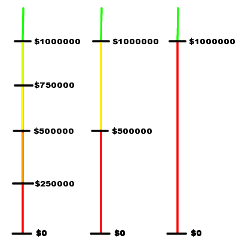
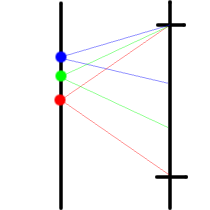

The problem explicitly states that the contestant has an infinite number of degrees of freedom. She can bet ANY fraction of her current amount. This makes it impossible to brute force over all of the possible bets. The trick is to discretize the problem.
Following one of the principles in problem solving, we look at the easier cases. The problem is easy if there is one round. We suggest you do it for the case when there are two rounds. It is not hard, but it reveals the interesting nature of the problem. The figure below illustrates the situation in the second-to-last round, the last round and after the last round.
The colors represent different probability zones. All sums in a probability zone share the same probability of winning. The important sums are marked and labeled.
If we know the probability of winning for all sums in the next round Pnext(sum), then the probability of winning in this round is:
p * Pnext(sum + stake) + (1 - p) Pnext(sum - stake),
where stake is the amount we are betting.
Now, given the existence and location of the important sums in the next round, we can find the locations of the important sums in this round. The figure below illustrates how we find these sums. The midpoints between the important sums of the next round become important in this round. I.e in the case of the green point in figure 2, we can move up by lowering the stake, and we can move down by increasing the stake, without changing the end probability. The probability of the blue, green and red points is the same. This also illustrates that the probability in a 'probability zone' which is limited by two important sums is equal to the probability at the lower important sum.

Conclusion: The important sums of round i are the union of the important sums
of round
Now, we only need to compute probabilities at the important sums, bootstrapping at 1.0 for $1000000, and 0.0 for $0 in the last round. Then, going backwards, we fill the probabilities at the important sums in the previous rounds.
By the limits of the input, we may try all the stakes that lead to important points in the next round. It is an interesting question whether there are mathematical properties that could reduce the complexity of this computation, but that is beyond the scope of this analysis.